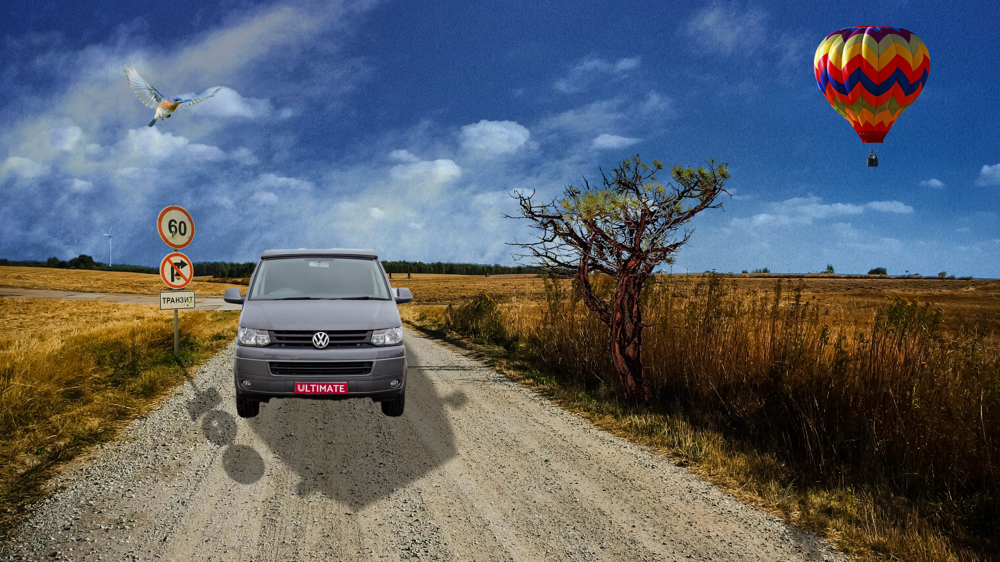

Radovi
Ovdje su priloženi svi moji radovi iz kolegija Digitalni multimedij 1.
VEKTORSKA GRAFIKA
Za ove vježbe sam koristila Inkscape i Fontforge
PRVA VJEŽBA
Radeći prvu vježbu naučila sam koristiti Fontforge. Napravila sam slova mog imena i prezimena.
Moj font DRUGA VJEŽBA
Drugu vježbu radila sam u Inkscapeu. Trebali smo stvoriti krivulje te preko njih ispisati tekst.
Druga vježba TREĆA VJEŽBA
U Illustratoru smo trebali nacrtati rad po želji.
Cvijet ČETVRTA VJEŽBA
Za četvrtu vježbu sam napravila breskvu u Ilustratoru.
Breskva PRVI PROJEKTNI ZADATAK
Prvi projektni zadatak je bio vrlo zanimljiv. Zadanu sliku voća smo morali nacrtati u Ilustratoru. Naučila sam mnogo toga.
Voće
PIKSEL GRAFIKA
Za vježbe iz piksel grafike koristila sam Adobe Photoshop i Gimp..
PETA VJEŽBA
Peta vježba bavila se retuširanjem.
ŠESTA VJEŽBA
Za šestu vježbu učili smo kolorirati.
SEDMA VJEŽBA
Na sedmoj vježbi radili smo fotomontažu.

DRUGI PROJEKTNI ZADATAK
Drugi projektni zadatak bio je fotomontaža i koloriranje.
VIDEO I WEB
Za ove vježbe koristila sam Adobe Premiere i Notepad++ za izradu web stranice.
OSMA VJEŽBA
Osma vježba bila je kinemagraf.Radila sam kinemagraf Mie i Adriane kako skakuću.
DEVETA VJEŽBA
Deveta vježba bavila se obradom videa.
DESETA I JEDANAESTA VJEŽBA
Deseta i jedanaesta vježba bavila se kodiranjem i izradom naše vlastite stranice.
Moja stranica
{kind=link}